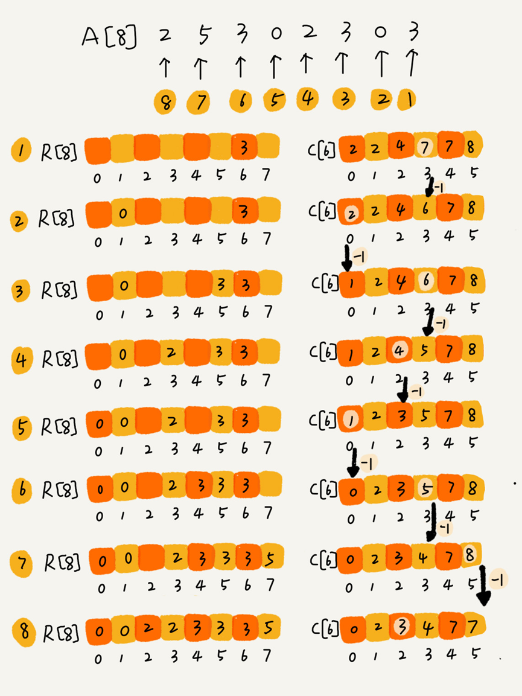
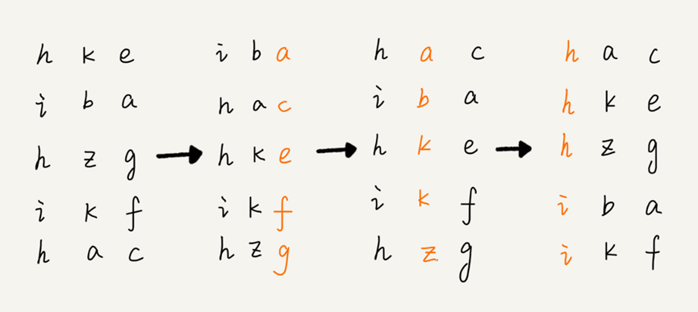

一、线性排序算法介绍
- 线性排序算法包括桶排序、计数排序、基数排序。
- 线性排序算法的时间复杂度为$O(n)$。
- 此
3种排序算法都不涉及元素之间的比较操作，是非基于比较的排序算法。- 对排序数据的要求很苛刻，重点掌握此
3种排序算法的适用场景。
二、桶排序（Bucket sort）
算法原理：
- 将要排序的数据分到几个有序的桶里，每个桶里的数据再单独进行快速排序。
- 桶内排完序之后，再把每个桶里的数据按照顺序依次取出，组成的序列就是有序的了。
使用条件
- 要排序的数据需要很容易就能划分成
m个桶，并且桶与桶之间有着天然的大小顺序。- 数据在各个桶之间分布是均匀的。
适用场景
- 桶排序比较适合用在外部排序中。
- 外部排序就是数据存储在外部磁盘且数据量大，但内存有限无法将整个数据全部加载到内存中。
应用案例
- 需求描述：
有10GB的订单数据，需按订单金额（假设金额都是正整数）进行排序
但内存有限，仅几百MB- 解决思路：
扫描一遍文件，看订单金额所处数据范围，比如1元-10万元，那么就分100个桶。
第一个桶存储金额1-1000元之内的订单，第二个桶存1001-2000元之内的订单，依次类推。
每个桶对应一个文件，并按照金额范围的大小顺序编号命名（00，01，02，…，99）。
将100个小文件依次放入内存并用快排排序。
所有文件排好序后，只需按照文件编号从小到大依次读取每个小文件并写到大文件中即可。- 注意点：
若单个文件无法全部载入内存，则针对该文件继续按照前面的思路进行处理即可。
三、计数排序（Counting sort）
算法原理
- 计数其实就是桶排序的一种特殊情况。
当要排序的n个数据所处范围并不大时，比如最大值为k，则分成k个桶
每个桶内的数据值都是相同的，就省掉了桶内排序的时间。
代码实现
1 | // 计数排序，a 是数组，n 是数组大小。假设数组中存储的都是非负整数。 |
- 案例分析：
假设只有8个考生分数在0-5分之间，成绩存于数组A[8] = [2，5，3，0，2，3，0，3]。
使用大小为6的数组C[6]表示桶，下标对应分数，即0，1，2，3，4，5。C[6]存储的是考生人数，只需遍历一边考生分数，就可以得到C[6] = [2，0，2，3，0，1]。
对C[6]数组顺序求和则C[6]=[2，2，4，7，7，8]，c[k]存储的是小于等于分数k的考生个数。
数组R[8] = [0，0，2，2，3，3，3，5]存储考生名次。那么如何得到R[8]的呢？
从后到前依次扫描数组A，比如扫描到3时，可以从数组C中取出下标为3的值7，也就是说，到目前为止，包括自己在内，分数小于等于3的考生有7个，也就是说3是数组R的第7个元素（也就是数组R中下标为6的位置）。
当3放入数组R后，小于等于3的元素就剩下6个了，相应的C[3]要减1变成6。
以此类推，当扫描到第二个分数为3的考生时，就会把它放入数组R中第6个元素的位置（也就是下标为5的位置）。
当扫描完数组A后，数组R内的数据就是按照分数从小到大排列的了。
使用条件
- 只能用在数据范围不大的场景中，若数据范围
k比要排序的数据n大很多，就不适合用计数排序；- 计数排序只能给非负整数排序，其他类型需要在不改变相对大小情况下，转换为非负整数；
- 比如如果考试成绩精确到小数后一位，就需要将所有分数乘以
10，转换为整数。
四、基数排序（Radix sort）
算法原理（以排序10万个手机号为例来说明）
- 比较两个手机号码
a，b的大小，如果在前面几位中a已经比b大了，那后面几位就不用看了。- 借助稳定排序算法的思想，可以先按照最后一位来排序手机号码，然后再按照倒数第二位来重新排序，以此类推，最后按照第一个位重新排序。
- 经过
11次排序后，手机号码就变为有序的了。- 每次排序有序数据范围较小，可以使用桶排序或计数排序来完成。

使用条件
- 要求数据可以分割独立的“位”来比较；
- 位之间由递进关系，如果
a数据的高位比b数据大，那么剩下的地位就不用比较了；- 每一位的数据范围不能太大，要可以用线性排序，否则基数排序的时间复杂度无法做到$O(n)$。
五、思考
如何根据年龄给
100万用户数据排序？实际上，根据年龄给
100万用户排序，就类似按照成绩给50万考生排序。假设年龄的范围最小1岁，最大不超过120岁。
可以遍历这100万用户，根据年龄将其划分到这120个桶里，然后依次顺序遍历这120个桶中的元素。
这样就得到了按照年龄排序的100万用户数据。
对
D，a，F，B，c，A，z这几个字符串进行排序，要求将其中所有小写字母都排在大写字母前面，但是小写字母内部和大写字母内部不要求有序。
比如经过排序后为a，c，z，D，F，B，A，这个如何实现呢？如果字符串中处理大小写，还有数字，将数字放在最前面，又该如何解决呢？用两个指针
a、b：
a指针从头开始往后遍历，遇到大写字母就停下，b从后往前遍历，遇到小写字母就停下，交换a、b指针对应的元素；
重复如上过程，直到a、b指针相交。
对于小写字母放前面，数字放中间，大写字母放后面，可以先将数据分为小写字母和非小写字母两大类，进行如上交换后再在非小写字母区间内分为数字和大写字母做同样处理


评论加载中